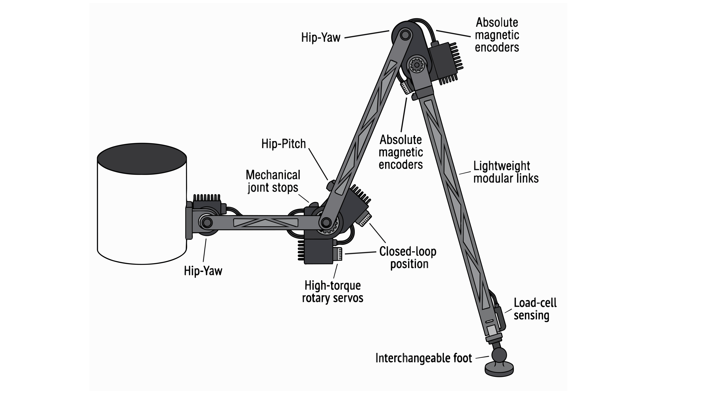
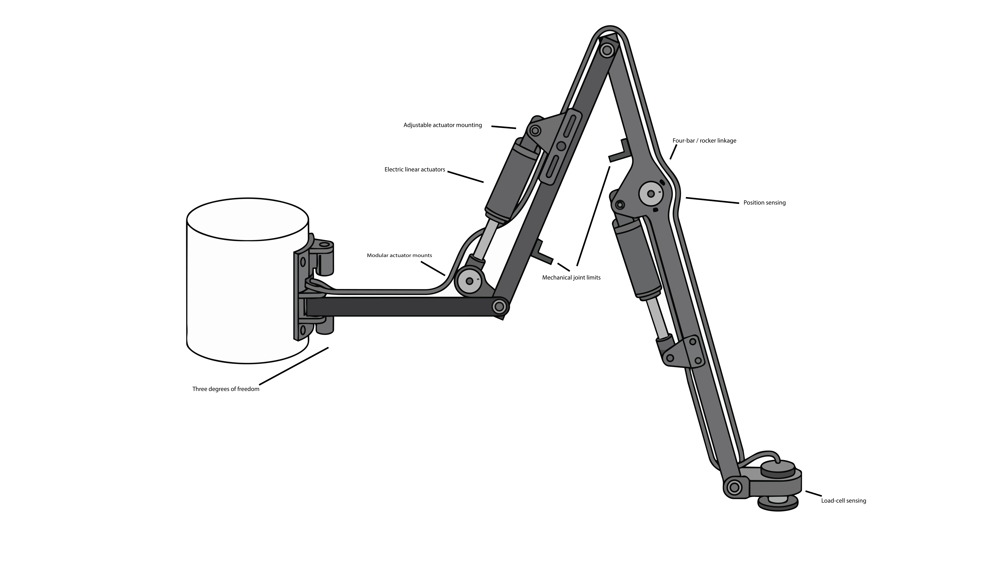
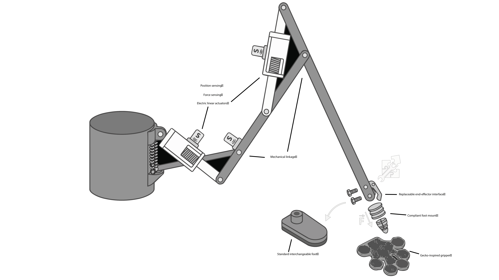

Ideation and Concept Generation
The purpose of this design ideation phase was to explore a wide range of possible features for a modular robotic leg intended for a six-legged walking robot.
Rather than selecting one design immediately, the team generated approximately 100 individual product features covering joint architecture, actuation, sensing, structural design, foot interaction, modularity, and control. These ideas were grouped, ranked, and combined into three distinct product concepts.
Table of Contents
Project Focus Initial Brainstorm Joint Architecture and Kinematics Rotary and Linear Actuation Actuator Mounting and Force Transmission Position and Motion Feedback Foot and Ground Contact Gecko Gripper and End-Effector Concepts Structural Design Wiring, Safety, and Control Grouping and Ranking Top Ranked Features Complete Feature Ranking Product Concepts Concept 1: Rotary Servo-Actuated Leg Concept 2: Electric Linear-Actuator Leg Concept 3: Linear-Actuated Leg with Gecko End Effector Concept Comparison Selected Features Moving Forward Brainstorming Process Design Ideation Video
Project Focus
Design Area
What We Explored
Movement Joint geometry, degrees of freedom, and walking range
Actuation Servo motors, rotary motors, and linear actuators
Feedback Encoders, potentiometers, IMUs, and contact sensors
Ground Interaction Foot shape, traction, force sensing, and compliance
Modularity Replaceable actuators, links, feet, and end effectors
Structure Lightweight and manufacturable leg components
Safety Joint limits, stall detection, calibration, and fault handling
Initial Brainstorm
The initial brainstorm focused on individual product features rather than complete designs. This allowed the team to generate a large design space before deciding which ideas should be combined.
Joint Architecture and Kinematics
#
Feature
Purpose
1
Three-degree-of-freedom leg
Provides hip yaw, hip pitch, and knee pitch
2
Two-degree-of-freedom leg
Simplifies mechanical and control requirements
3
Offset hip joint
Increases lateral workspace
4
Four-bar linkage
Controls foot motion mechanically
5
Parallel-link knee mechanism
Improves load support
6
Foot-leveling linkage
Helps keep the foot approximately level
7
Adjustable upper-leg link
Allows leg geometry to be modified
8
Adjustable lower-leg link
Allows leg geometry to be modified
9
Interchangeable link geometry
Supports different stride configurations
10
Mechanical joint stops
Prevents excessive joint rotation
11
Adjustable joint-angle limits
Allows range of motion to be changed
12
Foldable leg configuration
Allows more compact storage
13
Workspace-optimized joint geometry
Maximizes useful movement
14
Self-collision optimized spacing
Reduces interference between components
15
Repeatable walking-arc geometry
Supports consistent walking motion
Back to Table of Contents
Rotary and Linear Actuation
#
Feature
Purpose
16
High-torque hip servo
Provides powered hip movement
17
High-torque knee servo
Provides lifting and support
18
Compact distal servo
Reduces weight farther down the leg
19
Brushless motor with planetary gearbox
Provides efficient high-torque movement
20
Geared DC motor with encoder
Combines torque with position feedback
21
Stepper motor
Provides controlled incremental movement
22
Worm-drive actuator
Provides high holding torque
23
Belt-reduction transmission
Moves motor mass closer to the body
24
Cable-driven joint
Reduces distal actuator weight
25
Electric linear actuator
Produces controlled linear movement
26
Linear actuator with four-bar linkage
Converts linear movement into joint rotation
27
Linear actuator with position feedback
Measures actuator extension
28
Lead-screw actuator
Provides controlled linear movement
29
Pneumatic linear actuator
Produces rapid extension and retraction
30
Double-acting pneumatic cylinder
Provides powered motion in both directions
31
Pneumatic actuator with flow control
Allows speed adjustment
32
Hydraulic linear actuator
Produces high-force movement
33
Hydraulic actuator with pressure sensing
Adds force-related feedback
34
Spring-assisted actuator
Reduces required motor load
35
Series-elastic actuator
Adds compliance and impact absorption
Back to Table of Contents
Actuator Mounting and Force Transmission
#
Feature
Purpose
36
Quick-release actuator bracket
Simplifies actuator replacement
37
Modular actuator cartridge
Allows the actuator assembly to be replaced separately
38
Clevis-mounted linear actuator
Provides pivoting actuator attachment
39
Rocker linkage
Converts actuator movement into joint rotation
40
Bell-crank mechanism
Changes force direction
41
Adjustable actuator attachment point
Changes mechanical advantage
42
Pushrod linkage
Transfers actuator force
43
Dual-actuator joint
Increases available load capacity
44
Hip counterbalance spring
Reduces actuator load
45
Mechanical leverage system
Reduces required actuator force
Position and Motion Feedback
#
Feature
Purpose
46
Absolute magnetic hip encoder
Measures hip position
47
Absolute magnetic knee encoder
Measures knee position
48
Incremental encoder with homing
Tracks movement after calibration
49
Potentiometer joint sensing
Measures joint angle
50
Hall-effect joint sensing
Provides contactless angle sensing
51
Linear potentiometer
Measures actuator extension
52
Joint-output encoder
Measures actual joint position
53
Calculated joint velocity
Determines movement speed from encoder data
54
Upper-leg IMU
Measures orientation and motion
55
Foot-mounted IMU
Measures motion near the ground
56
Home-position sensor
Establishes a known reference position
57
End-of-travel sensor
Detects joint or actuator limits
58
Slip detection
Compares commanded and actual movement
59
Backlash estimation
Detects mechanical play
60
Encoder/IMU sensor fusion
Combines multiple feedback sources
#
Feature
Purpose
61
Force-sensitive resistor
Detects foot contact
62
Load cell
Measures ground reaction force
63
Multiple foot force sensors
Measures force distribution
64
Contact switch
Provides basic ground detection
65
Compliant rubber foot
Improves grip and compliance
66
High-friction foot insert
Improves traction
67
Rounded foot
Improves contact on uneven surfaces
68
Wide foot
Supports soft terrain
69
Narrow foot
Supports hard indoor surfaces
70
Articulated foot
Passively adjusts to terrain
71
Spring-loaded foot
Absorbs impacts
72
Damped foot
Reduces bounce
73
Interchangeable feet
Allows terrain-specific configurations
74
Toe-style climbing tip
Assists with obstacles
75
Anti-slip foot geometry
Improves stance stability
Gecko Gripper and End-Effector Concepts
#
Feature
Purpose
76
Gecko-inspired adhesive foot
Provides additional surface attachment
77
Gecko gripper end effector
Allows specialized gripping
78
Interchangeable gecko module
Preserves modularity
79
Passive gecko adhesive pad
Adds attachment without active control
80
Active gecko gripper
Allows controlled engagement
81
Directional gecko surface
Provides directional adhesion
82
Compliant gecko mount
Improves surface contact
83
Gecko pad with force sensing
Combines gripping and feedback
84
Hybrid rubber/gecko foot
Combines traction and adhesion
85
Replaceable end-effector interface
Allows multiple foot attachments
Structural Design
#
Feature
Purpose
86
Aluminum upper-leg link
Provides lightweight structural support
87
Aluminum lower-leg link
Provides lightweight structural support
88
Carbon-fiber link with printed fittings
Reduces weight
89
Reinforced 3D-printed nylon link
Balances cost and strength
90
Fiber-reinforced polymer
Provides lightweight structural support
91
Hollow structural members
Reduces mass
92
Ribbed printed geometry
Improves stiffness
93
Topology-optimized link
Removes unnecessary material
94
Removable side plates
Improves maintenance access
95
Heat-set threaded inserts
Strengthens reusable fastener locations
Wiring, Safety, and Control
#
Feature
Purpose
96
Internal cable routing
Protects wiring
97
Strain relief
Protects wires near moving joints
98
Motor-current sensing
Detects stalls and overloads
99
Automatic startup calibration
Establishes known starting positions
100
Closed-loop control with fault state
Controls motion and handles faults
Brainstorm Snapshot
The image below shows the brainstorm before the features were finalized into product concepts.
Back to Table of Contents
Grouping and Ranking
After the initial brainstorm, related features were grouped according to their primary purpose.
Group
Main Question
Joint Architecture How should the leg move?
Actuation What should create the movement?
Force Transmission How should actuator force reach the joints?
Feedback How will the robot know where the leg is?
Ground Contact How will the foot interact with the surface?
End Effectors What specialized attachments could be used?
Structure How can the leg remain strong and lightweight?
Control & Safety How will motion remain controlled and protected?
The team then ranked the features based on their importance to basic leg operation and their usefulness in future concept development.
Top Ranked Features
Rank
Feature
Why It Ranked Highly
1 Three-degree-of-freedom leg
Provides useful spider-like motion
2 High-torque hip servo
Supports a significant portion of the leg load
3 High-torque knee servo
Provides lifting and stance support
4 Absolute magnetic hip encoder
Provides reliable hip-position feedback
5 Absolute magnetic knee encoder
Provides reliable knee-position feedback
6 Closed-loop position control
Improves movement accuracy and safety
7 Mechanical joint stops
Protects the mechanism
8 Ground-force load cell
Determines whether the foot is supporting weight
9 Interchangeable foot design
Supports multiple surfaces and experiments
10 Modular actuator cartridge
Simplifies testing and repair
11 Workspace-optimized geometry
Improves useful movement
12 Motor-current sensing
Detects stalls and jams
13 Reinforced printed structure
Balances strength, cost, and manufacturing
14 Startup calibration
Creates a known starting position
15 Adjustable actuator attachment
Allows torque/speed tradeoffs to be tested
Complete Feature Ranking
Ranks 16–30 — Very Strong Features
Rank
Feature
16
Electric linear actuator
17
Linear actuator with position feedback
18
Linear actuator with four-bar linkage
19
Four-bar linkage
20
Adjustable joint-angle limits
21
Joint-output encoder
22
Home-position sensor
23
Quick-release actuator bracket
24
Low-friction joint support
25
Adjustable upper-leg link
26
Adjustable lower-leg link
27
Compliant rubber foot
28
Strain relief
29
Internal cable routing
30
Spring-assisted actuator
Ranks 31–40 — Alternative Actuation
Rank
Feature
31
Pneumatic linear actuator
32
Double-acting pneumatic cylinder
33
Pneumatic flow control
34
Hydraulic linear actuator
35
Hydraulic pressure sensing
36
Geared DC motor with encoder
37
Brushless motor with planetary gearbox
38
Worm-drive actuator
39
Lead-screw actuator
40
Series-elastic actuator
Ranks 41–54 — Sensors and Feedback
Rank
Feature
41
Hall-effect joint sensing
42
Linear potentiometer
43
Rotary potentiometer
44
Upper-leg IMU
45
Foot IMU
46
Force-sensitive resistor
47
Multiple foot force sensors
48
End-of-travel sensor
49
Slip detection
50
Sensor fusion
51
Joint velocity calculation
52
Backlash estimation
53
Ground-contact switch
54
Incremental encoder
Ranks 55–64 — Gecko / End Effector
Rank
Feature
55
Interchangeable gecko module
56
Gecko gripper
57
Gecko-inspired adhesive foot
58
Compliant gecko mount
59
Gecko pad with force sensing
60
Replaceable end-effector interface
61
Hybrid rubber/gecko foot
62
Active gecko gripper
63
Directional gecko surface
64
Passive gecko pad
Ranks 65–80 — Mechanical Structure
Rank
Feature
65
Rocker linkage
66
Bell-crank mechanism
67
Pushrod linkage
68
Mechanical leverage system
69
Counterbalance spring
70
Parallel-link knee
71
Aluminum upper-leg link
72
Aluminum lower-leg link
73
Hollow members
74
Ribbed printed structure
75
Heat-set inserts
76
Removable side plates
77
Interchangeable link geometry
78
Structural guards
79
Topology-optimized link
80
Carbon-fiber link
Ranks 81–90 — Specialized Features
Rank
Feature
81
Articulated foot
82
Spring-loaded foot
83
Damped foot
84
High-friction insert
85
Wide terrain foot
86
Rounded terrain foot
87
Toe-style climbing tip
88
Anti-slip geometry
89
Narrow indoor foot
90
Compact distal servo
Ranks 91–100 — Experimental Features
Rank
Feature
91
Cable-driven joint
92
Belt-reduction transmission
93
Dual-actuator joint
94
Two-degree-of-freedom leg
95
Foldable leg
96
Offset hip
97
Foot-leveling linkage
98
Fiber-reinforced polymer
99
Self-collision optimized spacing
100
Predetermined walking-arc geometry
Back to Table of Contents
Product Concepts
The ranked features were recombined into three distinct design concepts.
Concept 1 — Rotary Servo-Actuated Leg
Design Area
Selected Feature
Architecture Three-degree-of-freedom leg
Actuation High-torque rotary servos
Feedback Absolute magnetic encoders
Control Closed-loop position control
Safety Mechanical joint stops
Ground Detection Load-cell sensing
Foot Interchangeable foot
Structure Lightweight modular links
This concept uses rotary actuators directly at the main joints and emphasizes accurate joint positioning and straightforward control.

Concept 2 — Electric Linear-Actuator Leg
Design Area
Selected Feature
Architecture Three-degree-of-freedom leg
Actuation Electric linear actuators
Transmission Four-bar / rocker linkage
Adjustment Adjustable actuator mounting
Feedback Position sensing
Safety Mechanical joint limits
Ground Detection Load-cell sensing
Maintenance Modular actuator mounts
This concept converts linear actuator extension and retraction into rotational joint movement through mechanical linkages.

Concept 3 — Linear-Actuated Leg with Gecko End Effector
Design Area
Selected Feature
Actuation Electric linear actuators
Transmission Mechanical linkage
Feedback Position sensing
End Effector Gecko-inspired gripper
Modularity Replaceable end-effector interface
Compliance Compliant foot mount
Ground Detection Force sensing
Alternate Foot Standard interchangeable foot
This concept combines linear actuation with a modular gecko-inspired end effector for specialized surface interaction.

Back to Table of Contents
Concept Comparison
Feature
Concept 1
Concept 2
Concept 3
3-DOF Architecture
✓
✓
✓
Rotary Servo Actuation
✓
—
—
Linear Actuation
—
✓
✓
Position Feedback
✓
✓
✓
Closed-Loop Control
✓
✓
✓
Mechanical Joint Protection
✓
✓
✓
Ground Sensing
✓
✓
✓
Modular Foot
✓
✓
✓
Mechanical Linkage
—
✓
✓
Gecko End Effector
—
—
✓
Selected Features Moving Forward
The following features remained useful across multiple concepts and will continue to be considered during future design development.
Area
Selected Direction
Movement Three-degree-of-freedom architecture
Feedback Joint-position sensing
Control Closed-loop motion control
Safety Mechanical joint limits
Ground Interaction Contact or force sensing
Modularity Replaceable actuator and foot systems
Structure Lightweight components
Wiring Protected cable routing
Startup Automatic calibration
Adaptability Interchangeable end effectors
Brainstorming Process
A separate page documents how the brainstorming session was conducted, including:
Who participated
How the team met
How ideas were collected
Which project requirements were used
Additional resources used during ideation
How the features were grouped
How rankings were assigned
View the Brainstorming Process
Back to Table of Contents

{kind=link}
{kind=link}
{kind=link}